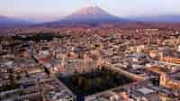

Data
- Elevation: 2,335 m
- Provincial Mayor: Víctor Hugo Rivera
- Metropolitan Area: Metropolitan Arequipa
- Climate: Arid temperate BWk
- Coordinates: 16°23′56″S 71°32′13″W / -16.398763888889, -71.536883333333
- Entity: City
- Citizenship: Arequipeño, -ña
Weather
- Temperature17°C°F
- Precipitation: 25%
- Humidity: 72%
- Wind: 8 km/h